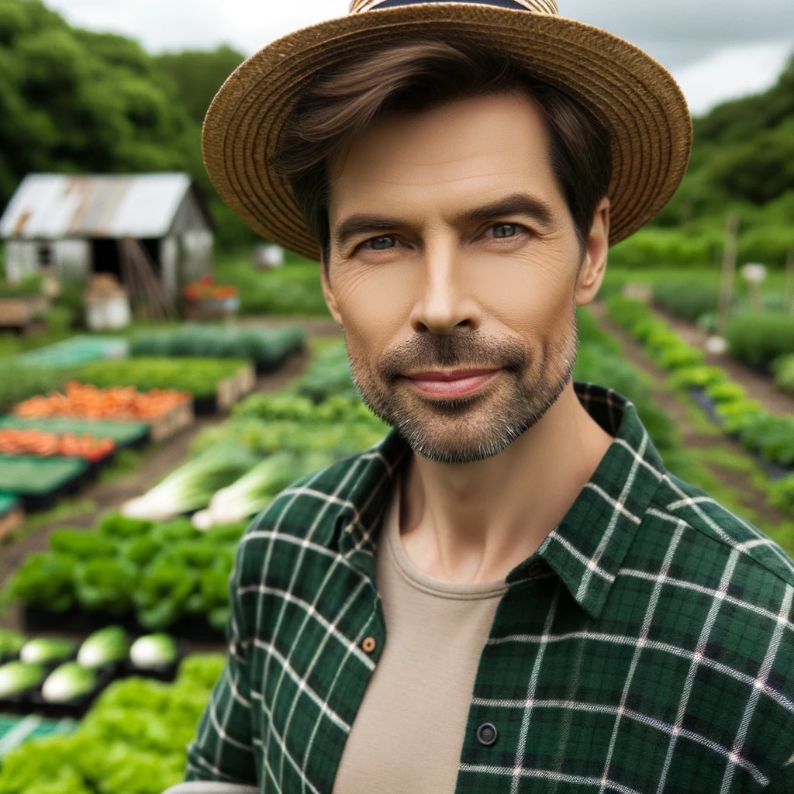
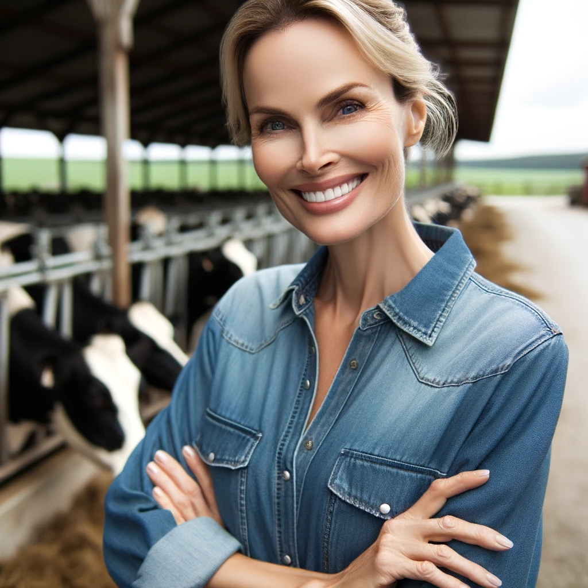
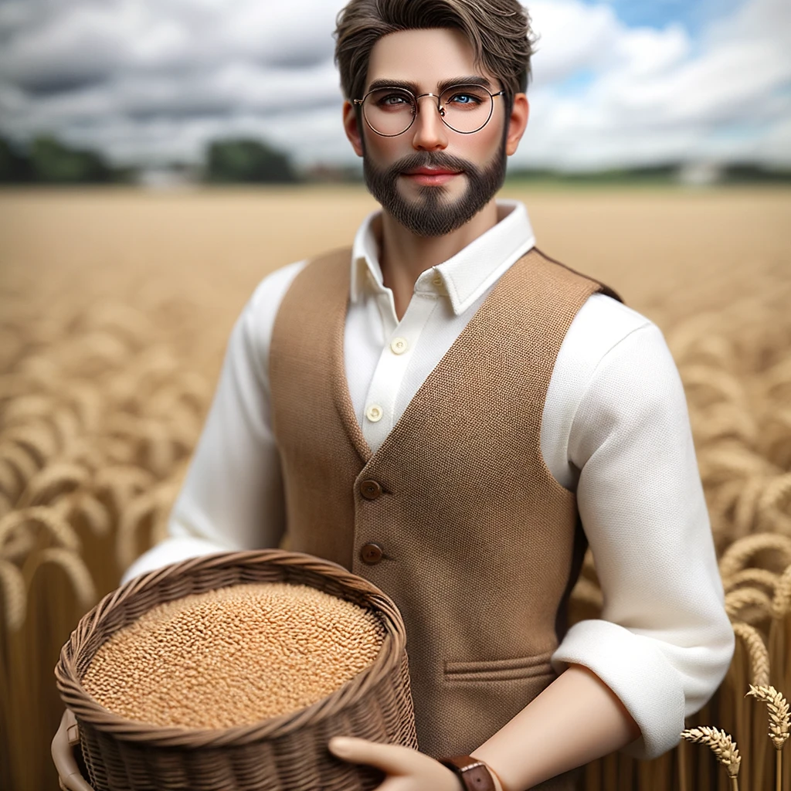
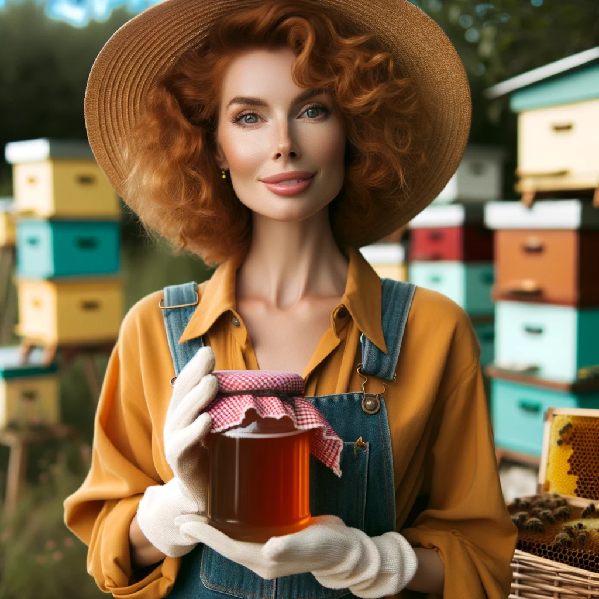

Farmer John
Specializing in organic vegetables and fruits. Located in Auckland.

Farmer Alice
Offers fresh dairy products and eggs. Located in Wellington.

Farmer Sam
Known for high-quality grains and cereals. Located in Christchurch.

Farmer Lucy
Produces honey and organic jams. Located in Dunedin.